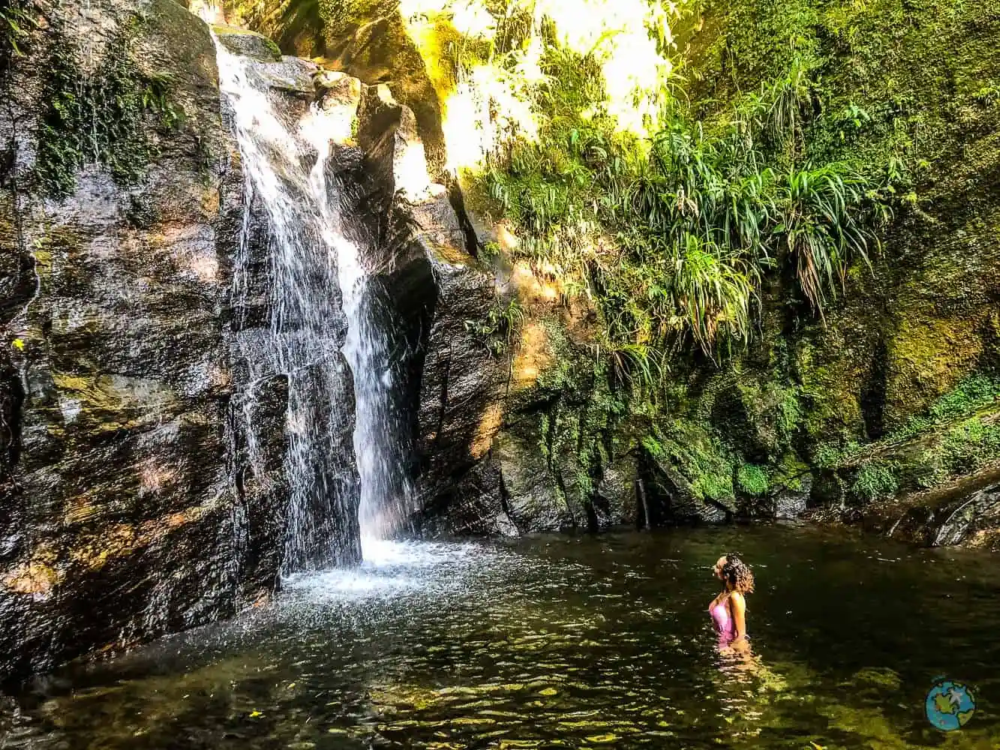

Raiane Gomes da Silva
" Olá! Me chamo Raiane e tenho 22 anos. Nascida e criada no Rio de Janeiro, especificamente no conjunto de favelas do Complexo da Maré. Amo o lugar de onde vim. Embora eu seja carioca, sou filha de pais nordestinos. Comecei a trabalhar aos meus 19 anos e 1 ano depois acabei entrando para a faculdade de Ciências Ambientais. Foi uma luta ter que trabalhar e estudar, mas consegui por um tempo. Bom, depois que percebi que não estava mais gostando do meu local de trabalho, decidi investir em meu próprio negócio. Foi aí que iniciei minha jornada em Consertos de Smartphones. Acredite, nada na vida é fácil. Se está fácil é porque tem algo de errado. Mas como eu adoro um bom desafio, passei por cima das dificuldades e hoje posso dizer que estou bem melhor do que no começo. Conheci a áre de T.I através de conteúdos na internet mesmo. Fui a fundo entender melhor sobre essa área e acabei gostando muito. Entrei em cursos para entender os conteúdos e com muita dificuldade acabei entendendo. Hoje estou nesse projeto da Prefeitura com intuito de me especializar. Será um futuro bem promissor e espero aproveitar cada segundo dessa jornada."
Escutar música enquanto faço alguma tarefa. Mesmo as mais importantes. Consigo me concentrar mesmo com vozes e instrumentos na minha mente.
Assistir séries e filmes. Sou apaixonada! Sempre que tenho tempo, uso para me entreter com lançamentos novos.
Gosto de praticar atividades físicas em alguns dias da semana. Acho essencial.
Não sou criativa, mas pinto uns quadros para passar o tempo.
Estive pela primeira vez na cachoeira do Horto em 2021 através de atividades que eu desenvovlia para a faculdade. Acabou se tornou um dos meus lugares favoritos que eu gosto de estar visitando sempre que possível. É um lugar bastante atrativo e que também está rodeado pela natureza. Fica localizado na floresta da Tijuca. É a cachoeira de melhor acesso e de fácil localização.
